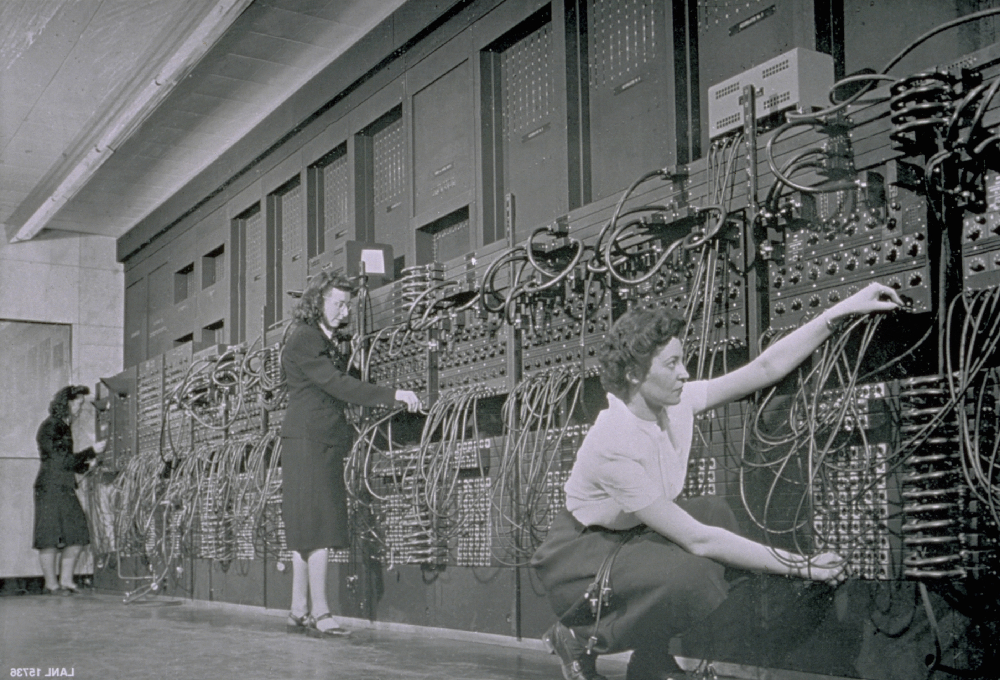
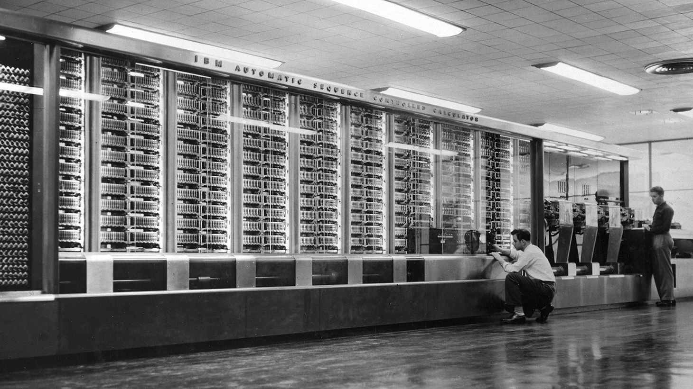
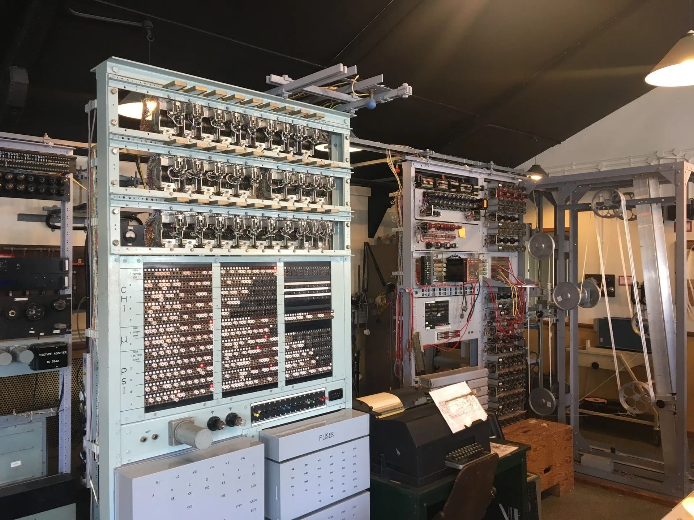
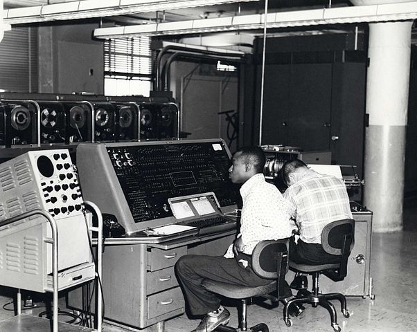
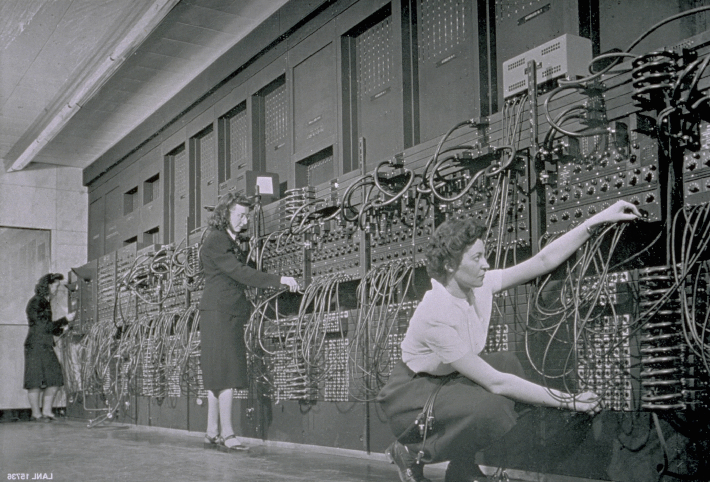
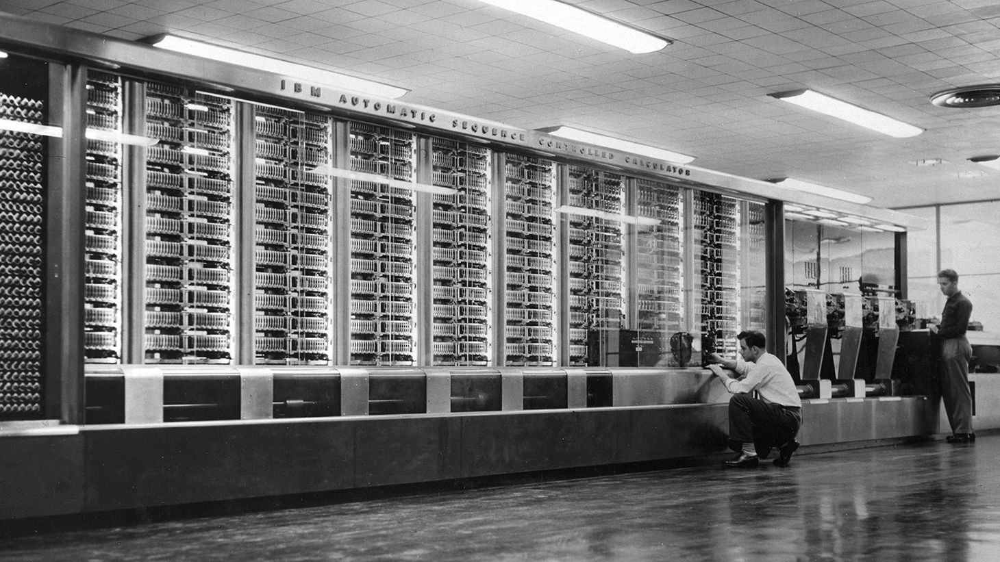
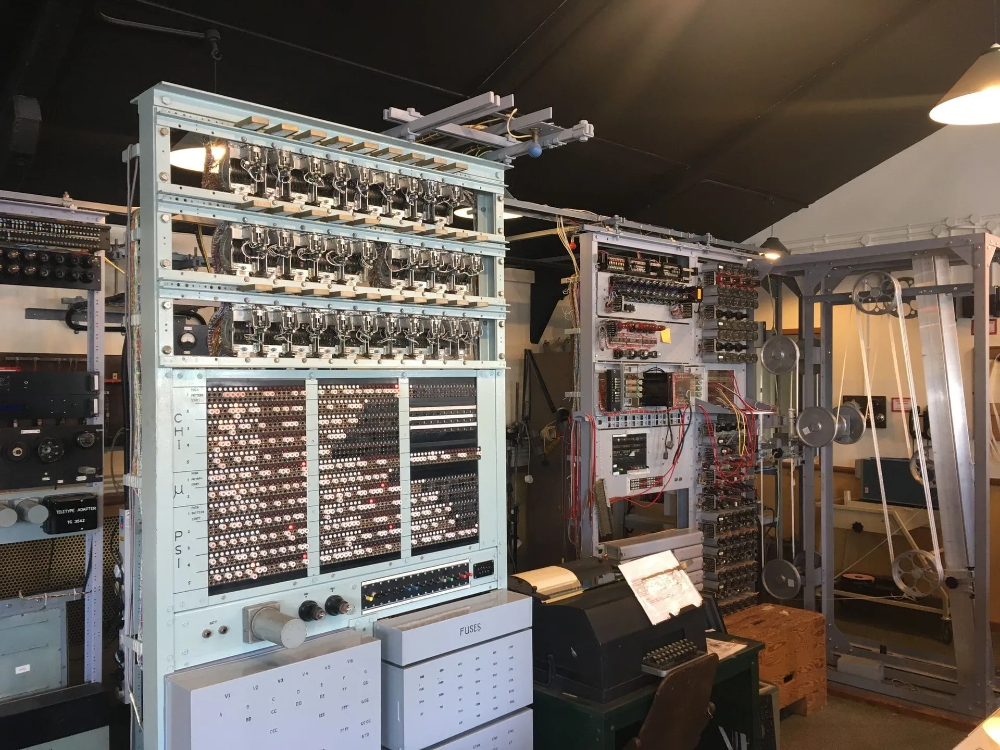
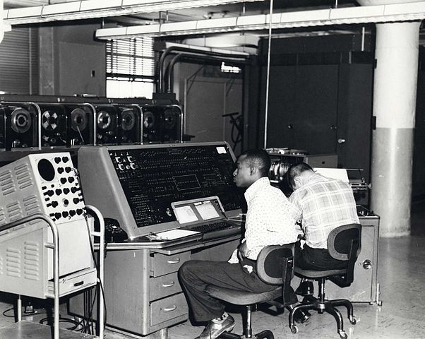
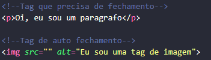

Índice
- História dos computadore
- Como é uma estrutura básica de um HTML?
- Entendendo a diferença entre listas ordenadas e não ordenadas
- Links de referências
História dos computadores
A primeira geração de computadores automáticos de uso geral surgiu durante a Segunda Guerra Mundial, com a necessidade de realizar um grande número de cálculos e decifrar mensagens. Abaixo alguns computadores que marcaram geração.
👩💻 1° Geração
ENIAC foi um dos primeiros computadores eletrônicos a serem desenvolvidos. Sua construção começou na Pensilvânia em 1943 e foi apresentado ao público em 1946. O mesmo tinha a funcionalidade de realizar uma grande quantidade de cálculos. O ENIAC foi projetado pelos engenheiros John W. Mauchly e John Presper Eckert, mas foram seis mulheres que fizeram toda a programação deste computador. Graças a essas seis mulheres (Betty Snyder Holberton, Jean Jennings Bartik, Kathleen McNulty Mauchly Antonelli, Marlyn Wescoff Meltzer, Ruth Lichterman Teitelbaum e Frances Bilas Spence) a programação é algo mais acessível a todos.

Mark I foi o primeiro computador eletrônico dos EUA. O mesmo foi apresentado à IBM por Howard Aiken em 1937, porém, a IBM só iniciou seu desenvolvimento em 1939 e concluiu em 1944. Foi no processo de construção do Mark II que o termo "bug" surgiu, conceito esse usado para descrever um problema computacional.

Colossus foi desenvolvido em 1939 por alguns cientistas britânicos, incluindo Turing e Thomas H. Flowers. 💜Turing, considerado por muitos hoje como o pai da computação, foi o responsável pelo projeto eletromecânico Bombe que permitiu decifrar enigmas alemães, ajudando assim com o fim da Segunda Guerra Mundial. Além disso, o Colossus foi o primeiro computador que combinou operação digital, eletrônica e programável.

👩💻 2° Geração
Os computadores da segunda geração (1959-1965) já funcionavam por meio de transistores, mas ainda eram muito grandes.

👩💻 3° Geração
A terceira geracao de computadores se inicia em 1965 e vai até 1975. Aqui os os transistores foram substituidos por circuitos integrados, dando vida aos computadores pessoais

👩💻 4° Geração (1975-até os dias atuais)
Com o crescimento exponencial da tecnologia e a criação de microchips, os computadores tornaram-se cada vez menores e com um poder de processamento e funcionalidade gigantesco.

ENIAC foi um dos primeiros computadores eletrônicos a serem desenvolvidos. Sua construção começou na Pensilvânia em 1943 e foi apresentado ao público em 1946. O mesmo tinha a funcionalidade de realizar uma grande quantidade de cálculos. O ENIAC foi projetado pelos engenheiros John W. Mauchly e John Presper Eckert, mas foram seis mulheres que fizeram toda a programação deste computador. Graças a essas seis mulheres (Betty Snyder Holberton, Jean Jennings Bartik, Kathleen McNulty Mauchly Antonelli, Marlyn Wescoff Meltzer, Ruth Lichterman Teitelbaum e Frances Bilas Spence) a programação é algo mais acessível a todos.
Mark I foi o primeiro computador eletrônico dos EUA. O mesmo foi apresentado à IBM por Howard Aiken em 1937, porém, a IBM só iniciou seu desenvolvimento em 1939 e concluiu em 1944. Foi no processo de construção do Mark II que o termo "bug" surgiu, conceito esse usado para descrever um problema computacional.
Colossus foi desenvolvido em 1939 por alguns cientistas britânicos, incluindo Turing e Thomas H. Flowers. 💜Turing, considerado por muitos hoje como o pai da computação, foi o responsável pelo projeto eletromecânico Bombe que permitiu decifrar enigmas alemães, ajudando assim com o fim da Segunda Guerra Mundial. Além disso, o Colossus foi o primeiro computador que combinou operação digital, eletrônica e programável.
Os computadores da segunda geração (1959-1965) já funcionavam por meio de transistores, mas ainda eram muito grandes.
A terceira geracao de computadores se inicia em 1965 e vai até 1975. Aqui os os transistores foram substituidos por circuitos integrados, dando vida aos computadores pessoais
Com o crescimento exponencial da tecnologia e a criação de microchips, os computadores tornaram-se cada vez menores e com um poder de processamento e funcionalidade gigantesco.
Como é uma estrutura básica de um HTML?
Os elementos HTML ou também chamados de tags HTML, são utilizados para informar ao navegador que tipo de estrutura é essa que está sendo construída, podendo ser títulos, parágrafos, imagens, links, entre outros. As tags são formadas por uma estrutura própria, iniciam com o sinal “menor que”, em seguida vem o nome daquele elemento e por fim, o sinal “maior que”. Podem ser dispostas em tags que precisam de fechamento e tags que fecham sozinhas (self-closing)
Entendendo a diferença entre listas ordenadas e não ordenadas
Lista é um importante recurso de HTML, pois permite criarmos tópicos de textos para uma melhor exemplificação de um determinado assunto. Existe dois tipos de listas: Não ordenada e Ordenada ou numerada